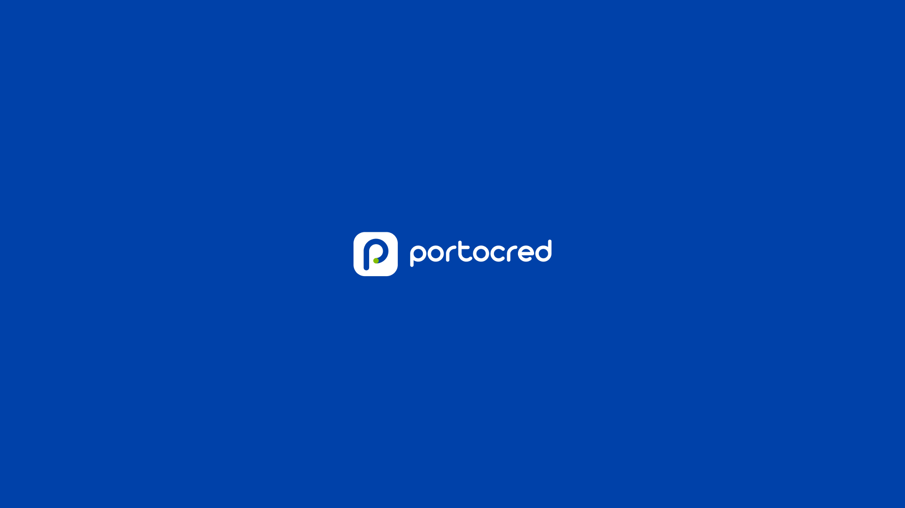
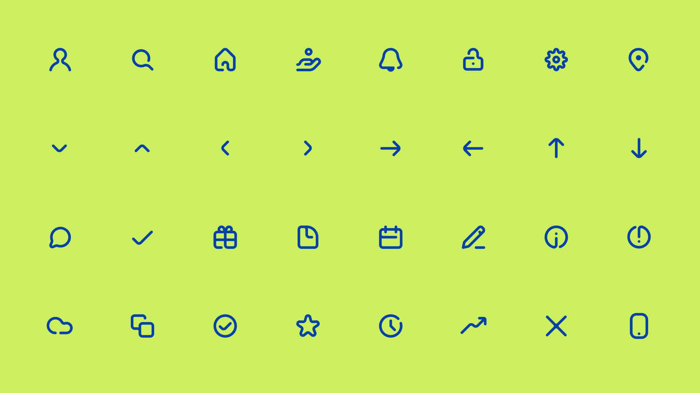
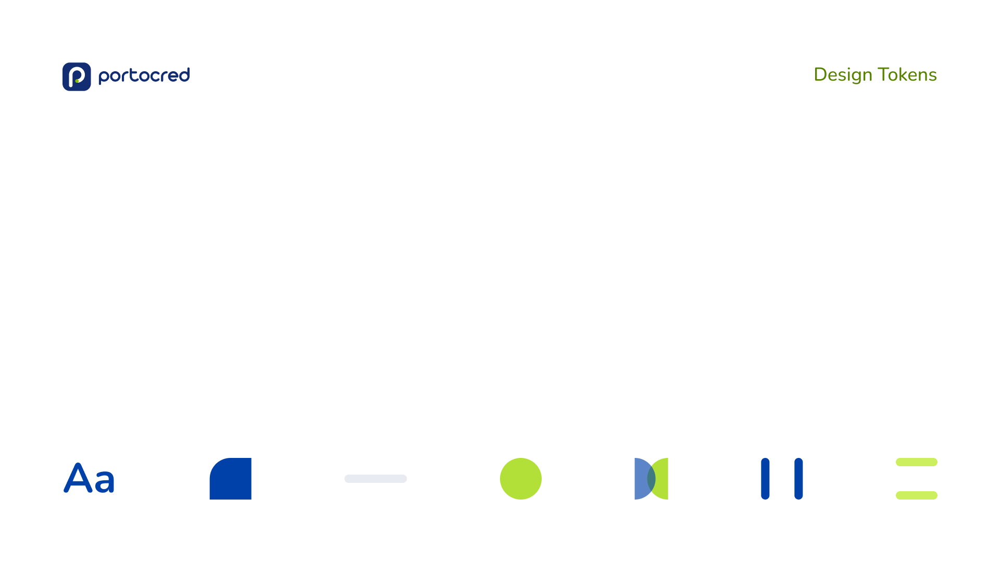
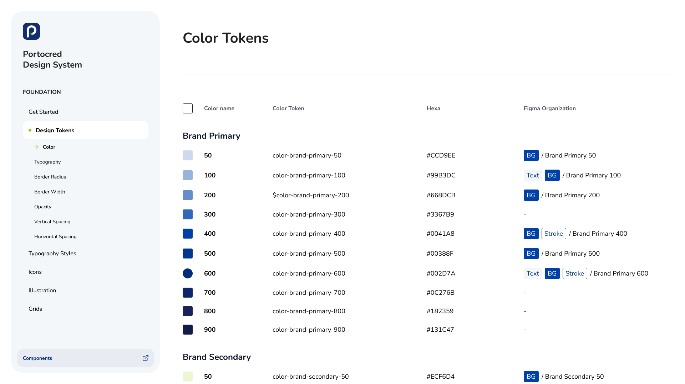
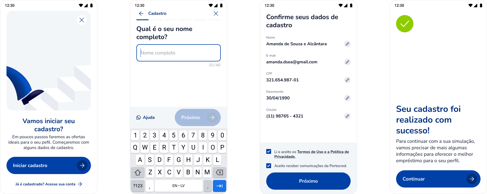
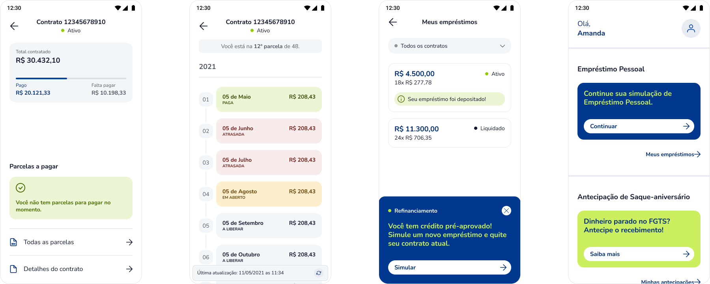
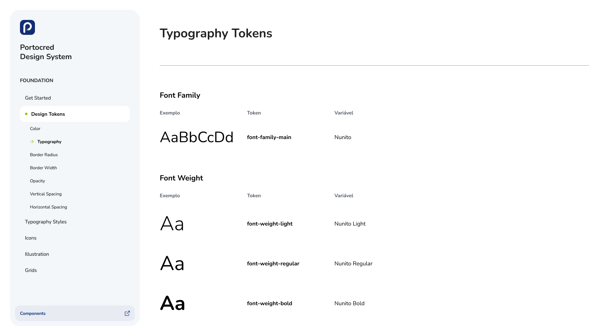
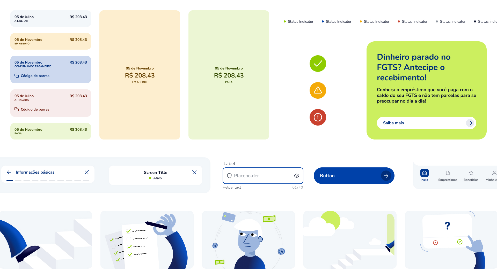

TL;DR
- Portocred depended on physical stores, and the pandemic exposed how fragile that was, forcing a fast move to digital.
- Portolab, a lean team of a PM, a tech team of five, and me as designer, built the entire onboarding and loan platform from scratch in about a year and a half.
- I structured a Design System around Design Tokens while the brand's own visual patterns were still being decided, so it could absorb changes without needing a rebuild.
- I also helped set up the communication process between design and engineering that kept fast decisions consistent.
- Result: full flows shipped in 1 year, digital became the best channel for closed loans within 6 months, and applicant qualification improved enough to lower background check costs.
Context
Portocred is a personal loans and investment company with a wide network of stores and agents across Brazil. In 2021, they built a senior team and launched Portolab, a Product, Tech, and Design lab created to reinvent the company for the digital environment. The team was lean: one PM, one designer (me), and a tech team of five, who managed to deliver a lot in just a year and a half, as this case covers.
My role was to deliver high-fidelity interface concepts, evolve the brand into a more modern, digitized presence, and work closely with the tech team to ensure new features stayed aligned with business goals.
Problem
Portocred's operation was heavily dependent on physical stores, and the pandemic exposed how fragile that was. The company needed to scale its lending and account management operation into digital, and fast. The challenge was clear: design the entire onboarding funnel and loan management platform as quickly as possible.
Solution
That urgency shaped the design approach from day one: start with a Design System immediately, since moving fast without one would have meant rework later.
Across both web and app, that meant designing:
- Loan application and background check flows
- Approval flows
- Logged area and loan management interfaces, including bill status visualization and payments
- Additional offerings, such as renegotiations and other loan types
- The website
All of it backed by a structured Design System, detailed further below.
Where the design work lived
Building the brand's new digital language
The recently redesigned logo called for a new visual language across digital platforms and media. I was responsible for bringing together graphic design styles, from color and typography to imagery and iconography, and turning them into a cohesive digital identity.


Speed and scale with design systems
Translating the still-evolving visual language into scalable digital assets meant building a new Design System around Design Tokens as the main tool to cut decision-making time and keep the brand consistent. I had to structure that system while the brand's own visual patterns were still being decided, which is exactly why Design Tokens made more sense than static components: changes to the brand downstream wouldn't mean rebuilding the system each time something shifted. Getting there quickly still required thoughtful decisions, which only happened through a structured communication process between design and engineering, one that was future-proof and highly maintainable.
The Design Tokens documentation became the base of the Design System, and in less than 6 months it was already present in 80% of the mobile app and web platform. It was also used for marketing materials, including emails, social media, ads, and campaigns.


Mobile App
The mobile app was our first release, and it marked the beginning of a fast delivery phase for the rest of the platform.

Loan application and onboarding played a huge role: it was designed to perform while and set applicants profiles.

Loan management designed to reduce defaults, new offerings, and reduce friction on payments.

